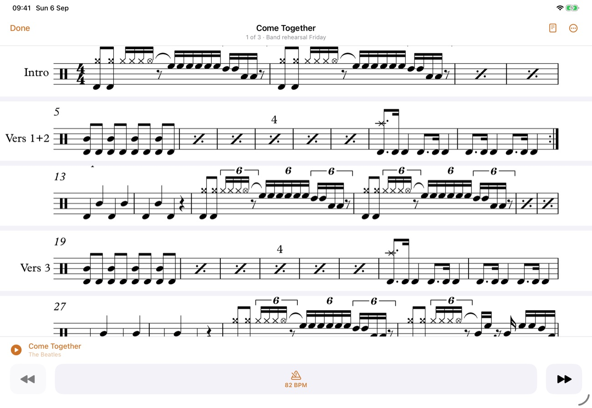
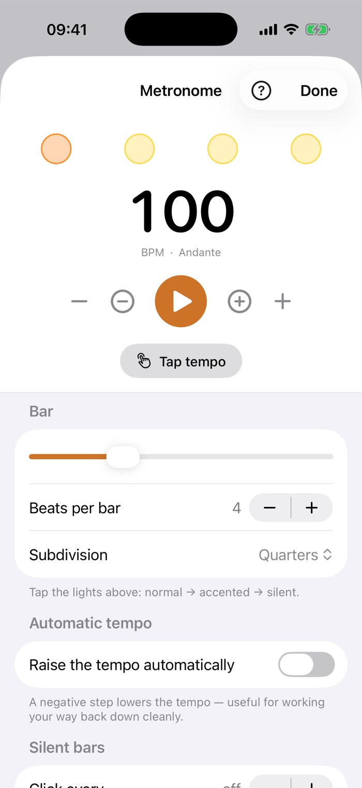
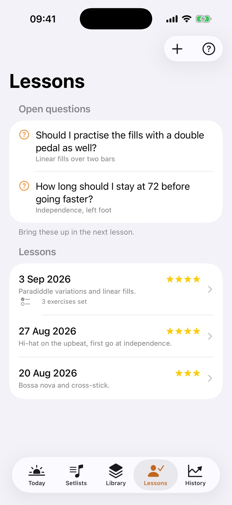
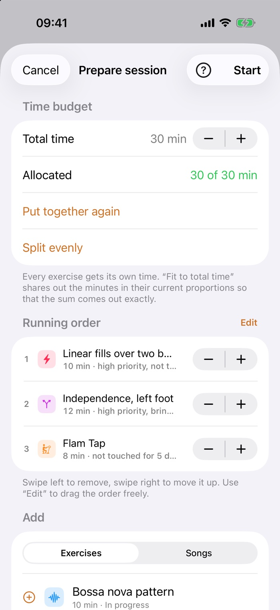
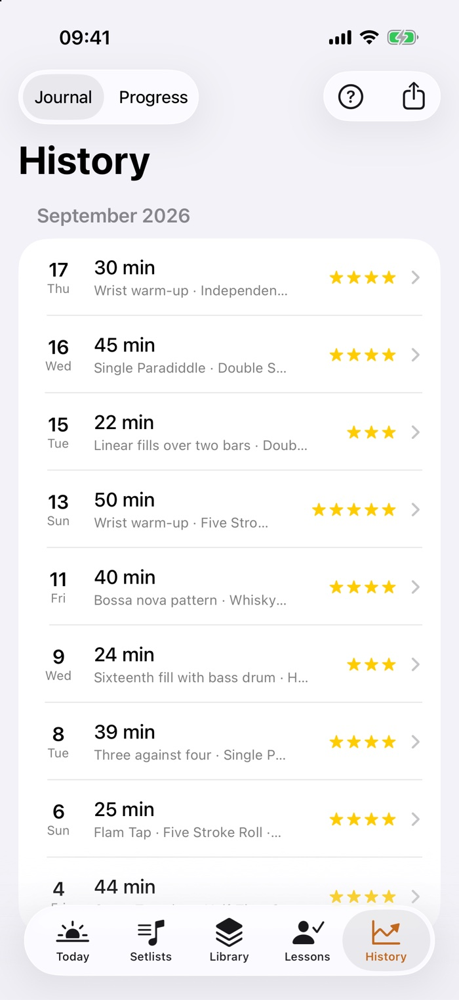
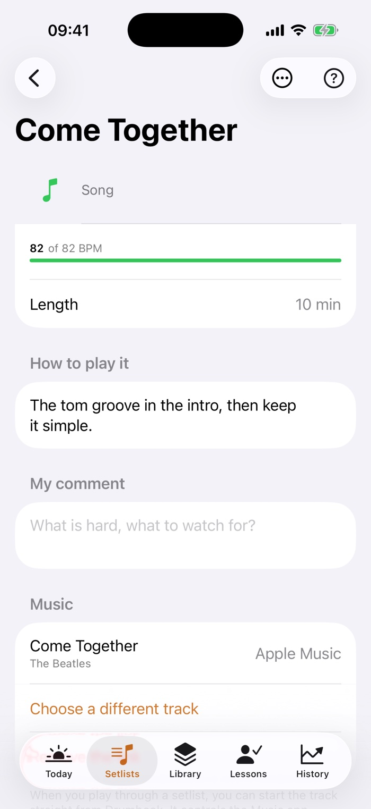
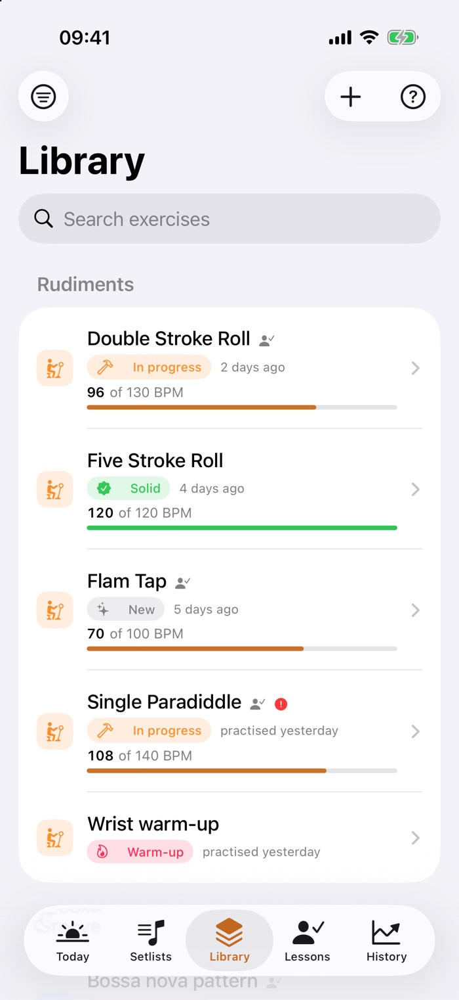
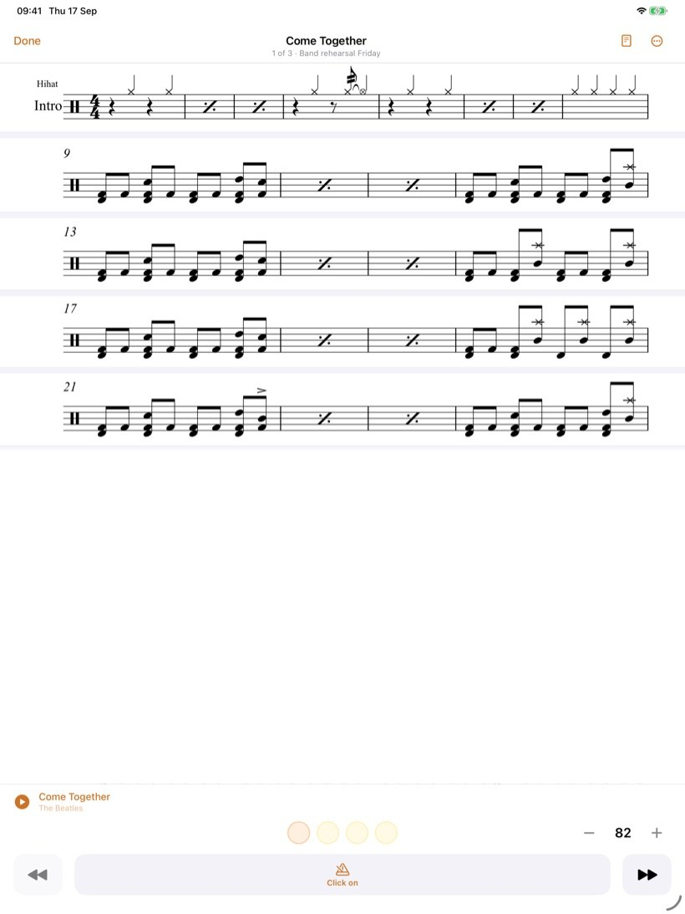
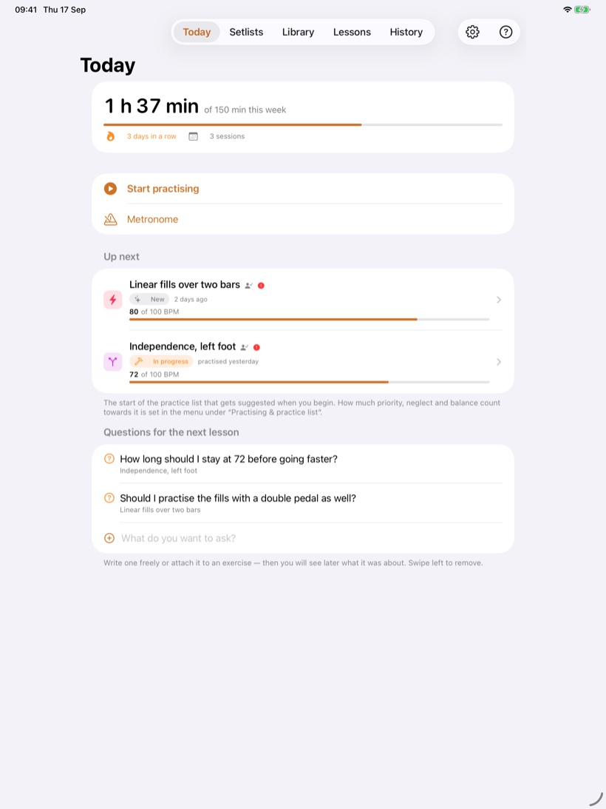
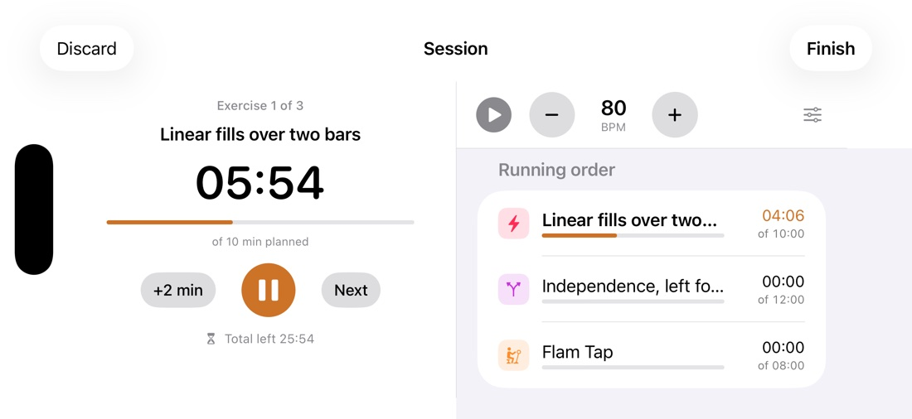

How it works
Drumbook in detail.
For anyone who wants to know exactly: how the ribbon finds its staves, what the clock works out, what the metronome can do, and where your data lives.
What Drumbook does
What is inside Drumbook.
Both hands on the sticks, none to turn the page
Sheet music comes in pages, and a drummer who is playing cannot turn one. So Drumbook cuts the staves out of your PDF and stacks them across the full width: one continuous ribbon instead of separate pages. Page turning stops being a problem, because there are no pages left.
- It finds the staves on its own, by their signature of five evenly spaced lines. That works on printed sheets as well as on photographed ones, and up to about three degrees it straightens a crooked page first.
- Section names, bar numbers and repeat marks stay with the music. Sideways the cut goes out to the last bit of ink rather than to the edge of the paper, and between two staves it lands exactly where nothing is written.
- On an iPad a stave becomes a good two times the size it has on paper, on an iPhone held sideways about one and a half. Held upright it gains no size, but it gains calm: no margins, no page turns, every stave in the same place.
- The screen stays awake while the music is open. Otherwise it goes dark in the second bar.
- When the detection isn't sure, it says so and shows the printed page rather than building a ribbon with a stave missing. A switch takes you back to the original page at any time anyway.
And it follows along while you play: to the click or to the music from your library. One button starts either. With music playing, you tap twice on the stave you are playing; from then on Drumbook knows where the song starts and how fast it goes, and asks once whether it fits. For pieces with repeats and jumps you set where it continues under "Fine-tuning". It is all stored in beats rather than seconds: set at 90, it still fits at 130.


The clock thinks along
A session isn't an alarm, it's a running order. You set how long you have altogether; every exercise gets its own share. Two countdowns run at once: one for the exercise, one for the whole evening.
- It moves on by itself after a short break, with a sound and a tap you can feel. No need to touch the phone.
- Overrunning is allowed. Staying longer on one exercise doesn't steal time from the others; the remaining time counts honestly.
- A quick verdict afterwards: the tempo you reached and a rating per exercise, plus one for the evening.
A click that doesn't drift
The metronome writes every beat into the audio ahead of time instead of trusting a timer. That's why it's still where it should be ten minutes in. And every exercise remembers its own setting.
- Every beat on its own: accented, normal or silent. Subdivisions up to sextuplets.
- Tap the tempo, raise it automatically, or stop after a set number of bars.
- Silent bars for timing: the click drops out, you keep playing, and when it returns you hear whether you're still on it.
- Keeps running with the screen locked, and can be worked from there.

What your teacher said is still there next week
For every lesson you note what it was about and how your teacher judged it. The exercises they set go straight into the library, and the generator knows they take precedence.
- Collect questions the moment they come up while practising. At the next lesson they're at the top of the screen.
- Sheet music with it: photographed, scanned or as a PDF, along with voice notes from the lesson.
- A PDF report shows your teacher what has actually happened since the last lesson.

What else is in there

The practice list writes itself
Tell Drumbook how many minutes you have. The generator does the rest. It pulls in what has been left alone too long, makes sure the same topic doesn't come round three times, and lets the important things through first.

Proof that it's going somewhere
Every session lands in the history. After a few weeks you can see in black and white how much you practised, where the time went, and where the tempo actually rose.

Play along with the original
A song is only really there once it holds up against the record. Attach the actual track to an exercise or a song: from your own library, the Apple Music titles in it included. You start it from the sheet music, and a hard passage you mark and play on a loop.

Your exercises, in order
The library holds it all together: what the exercise is for, the tempo you're aiming at, where you stand, when it last came up. Songs are kept apart; they shouldn't flood the practice list.

And besides
The small things that matter day to day.
Material on the exercise
Scan or photograph sheet music, import PDFs, record voice notes, keep links. While you practise it's all one tap away: sheet music as a ribbon, everything else zoomable full screen.
Reminders that fit
Daily at a set time, or only once you've been away from the kit for a number of days you choose yourself. No nagging.
Setlists for rehearsal
Songs in the order of the night, each with its own tempo and its own recording. Played through, the sheet stands large, the buttons are made for hands holding sticks, and the screen stays awake. No clock, no rating: a rehearsal is not a practice session.
Export and backup
A PDF report for your teacher. And a complete backup as a file that can be read back in, with attachments and without deleting anything in the process.
Practise freely
No plan, no practice list: just sit down and play. The clock counts up or down, at the end you write down what happened, and it counts like any other session.
Help where you are
There's a question mark on every screen. Behind it isn't a manual, but an explanation of exactly what's in front of you.
Upright, sideways, iPhone, iPad
The same journal, whichever way you hold it.
At the kit a device sits differently than it does on the sofa: propped on a music stand, flat beside the hi-hat, sideways on your knee. So every screen is built for both orientations, and on iPad it is not simply bigger, it is laid out differently.



And it makes no difference which device you start on: iPhone and iPad keep in step through your own iCloud: exercises, sessions, sheet music, and since recently your settings too.
Your data
It all stays here.
Drumbook is an app with no way back out. It has no sign-in, no account and no server of mine holding your practice. That is not a setting you can switch; none of it is built in. When your devices keep in step, they do it through your own iCloud. What you practise is nobody else's business.
- Your data, your iCloudExercises, sessions, notes and sheet music live on your device. If you have an iPhone and an iPad, they keep in step through your private iCloud: no account, no password, no server of mine in between. I cannot reach any of it.
- Nothing is measuredThere are no analytics built in, crash reports go to nobody, and the app carries no advertising identifier. It doesn't keep score of how you use it.
- No account neededYou set no password and enter your address nowhere. Syncing uses the Apple account already on your device.
- You can leave whenever you likeThe full backup is an open file that belongs to you. There's no hoard of data being kept back.
Where it stands
What's finished and what isn't.
Drumbook is a project out of a rehearsal room, not a company's product. Here is what already works and what is still to come.
Working and in daily use
- Library, sessions with a running order and two clocks
- Metronome with a count-in, including with the screen locked
- Lessons, questions for the teacher, history with a chart
- Material, reminders, setlists, practice-list generator
- Practising freely: a session without a practice list, with a duration or counting up
- The ribbon: the staves from your PDF, stacked across the full width
- The ribbon follows the click or the music from your library
- Mark a passage in a song and practise it on a loop
- A photo to greet you, a different one every day
- Writing on the sheet: strokes, sections and watch-out markers, with the Apple Pencil or a finger
- PDF report with a summary on page 1, full backup with restore
- Linking tracks from your library and playing them while you practise
- Runs on iPhone and iPad, upright and sideways, in English and in German
- Syncing between iPhone and iPad through your own iCloud, with no account and no sign-in
- Sheet music in the middle of a session, including a photo from your practice book
- The first test build on TestFlight, since 2 September
- A guided first run, with six exercises to start from, if you have none yet
- Testing is under way, and since 17 September beyond the closest circle
Still to come
- The route to the App Store; until then TestFlight is the only way in
- More feedback from drummers outside my own circle
- Rests lasting several bars are still counted wrong by the ribbon
- Split View alongside another app on iPad
- The Apple Music catalogue and Spotify; for now only what is in your own library
Try it yourself.
Drumbook is free while in testing. You get the invitation on the home page.